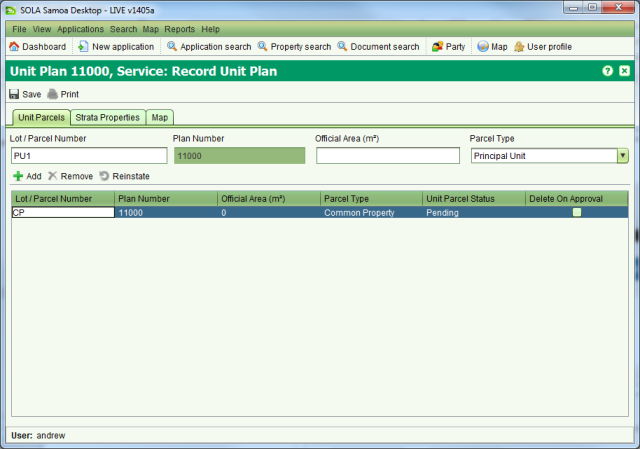
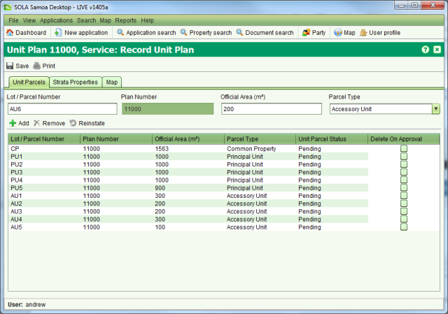

Lodge a Plan for a Unit Title Development
A Unit Title Development Plan (unit plan) identifies the location of all Principal and
Accessory units along with the Common Property. As with a normal survey plan, the
Quality Assurance team of MNRE is responsible for assessing the unit plan to ensure it is fit
for approval and suitable for titles to be issued.
Unit Title Developments can involve strata parcels (i.e. parcels that overlap in 3D space
such as the floors of a multi-story apartment building). As SOLA only provides 2D mapping
capabilities it does not support recording a spatial definition for unit parcels. Instead
only basic details for the units need to be captured such as the unit lot and plan number and
the unit area.
Lodge an Application
The first step to record a new unit plan is to lodge a new application in SOLA containing a
Record Unit Plan service. This should be done while the surveyor (or their representative) is
in attendance so that you can provide them with the lodgement notice detailing the fees
payable. Important: The Unit Title services must be enabled before they will be
available for selection in the Add Service dialog.
Steps
-
-
From the Dashboard select the
 New
application tool to open the Application Details screen.
New
application tool to open the Application Details screen.
-
On the General tab, select the surveyor as the Agent. Check the contact details for the
surveyor are appropriate and update if required. If the surveyor is not listed in the
drop down list, choose the Other Agent option at the top of the list and enter the
contact details for the surveyor in the fields provided.
-
On the Services tab, add the Record Unit Plan service to the application.
-
On the Property tab, enter the folio reference for the property underlying the Unit
Title Development and add it to the application using the Add property button. You
should verify each property using the
 Verify tool to confirm SOLA contains the appropriate
details to process the plan.
Verify tool to confirm SOLA contains the appropriate
details to process the plan.
-
Important: If the Verify tool indicates the underlying property record does not
exist in SOLA (i.e. Title exists column is unchecked) you will first need to ensure the
property record is created by the Land Registration Team using the Convert Paper Title
service before proceeding with this application.
-
On the Documents tab, record each of the physical documents provided by the surveyor.
At a minimum the Record Unit Plan services requires a Unit Plan document.
-
Ensure you select the appropriate document type and record the document date (i.e.
the date recorded on the face of the physical document) or today’ s date if the
physical document is not dated.
-
You can optionally enter a reference number for the document and a description. The
reference number should be taken from the physical document. If the physical
document does not have any reference number, then this field should be left blank.
-
The Source Agency is the name of the organization that created the physical
document. E.g. For the plan, the name of the surveyors firm or the surveyors name
can be entered here. This field is optional and can be left blank.
-
If you have scanned the document, use the Attachment field to link in the scanned
image. If you have not yet scanned the document, you will need to do this at a
later stage and link it into the document using the Edit Document functionality
available from Document Search.
-
On the Map points tab, navigate the map to the location of the plan and add one or more
application points using the
 Add Application Point tool.
Add Application Point tool.
-
On the Fees tab, enter the number of units that will be created by the plan and click
the
 Save button. This will lodge the
application and produce the lodgment notice. Print the notice and give it to the
surveyor (or their representative) as proof the application has been lodged. The
lodgment notice will indicate the fee to be paid for the application as well as the
date the application should be completed processing (30 days from the date of
lodgment).
Save button. This will lodge the
application and produce the lodgment notice. Print the notice and give it to the
surveyor (or their representative) as proof the application has been lodged. The
lodgment notice will indicate the fee to be paid for the application as well as the
date the application should be completed processing (30 days from the date of
lodgment).
Fee Payment
Once the lodgment notice is printed, the surveyor will need to take the notice to the
cashier in the finance section and arrange payment. When payment has been made, the cashier
will Open the application from the Unassigned
application list in the SOLA Desktop and check the Fee Paid flag on the Fees tab to indicate
the application can continue processing.
Open the application from the Unassigned
application list in the SOLA Desktop and check the Fee Paid flag on the Fees tab to indicate
the application can continue processing.
Assign the Application
Before work can begin on recording the unit plan information in SOLA, the application must
first get assigned to a QA user. Assignment of the application indicates that work on the
plan is underway.
Steps
-
-
From the SOLA Dashboard, check the Unassigned applications list to confirm the fee for
the application has been paid. If the fee has not been paid it will not be possible to
assign the application. In this situation contact the surveyor and/or cashier to
confirm the payment status for the application.
-
If the application fee has been paid, select the application in the Unassigned
applications list and click the
 Assign
tool. This will open the Application Assignment screen.
Assign
tool. This will open the Application Assignment screen.
-
Click the Assign button to assign the application. When the Assign action is complete,
you will be returned to the Dashboard and the assigned application will appear in your
Assigned applications list.
Typically users will only be able to assign applications to themselves (i.e. they will be
able to pull work), however team leaders will be able to manage the workload of their teams
and will be able to assign and reassign applications to other users. Note that the Un-assign andAssign tools can be
used reassign the application to another user if necessary
Un-assign andAssign tools can be
used reassign the application to another user if necessary
Manual Assessment
The QA user assigned to the application will perform the necessary manual checks to confirm
the unit plan complies with the appropriate regulations as described in the applicable Unit
Title Acts. If the assessment of the plan is successful, the QA user can begin recording the
details of the unit plan in SOLA using the Record Unit Plan service. If the assessment
reveals issues with the plan that must be addressed by the surveyor, then the plan will need
to be requisitioned.
Requisitioning and Resubmitting the Plan
When the unit plan requires requisition it will be necessary to update the application in
SOLA to the Requisitioned status.
Steps
-
-
Confirm the unit plan requires requisition with the appropriate team leader.
-
Create the requisition notice describing the issues that need to be addressed by the
surveyor.
-
Open the application from the Assigned applications list in the Dashboard. Go to the
Documents tab and create a new Requisition Notice document with the requisition notice
as the attachment. Attaching the requisition notice to the application will ensure the
reasons for requisitioning the plan are recorded in SOLA.
-
Using the Application action dropdown, select the
 Requisition action. This will update the application
status to Requisitioned and remove the application from your Assigned applications
list. If the Requisition action is not enabled on the Application action dropdown,
confirm the application is assigned to you and that you have the Requisition
Application role by asking IT Services to check your SOLA User setup.
Requisition action. This will update the application
status to Requisitioned and remove the application from your Assigned applications
list. If the Requisition action is not enabled on the Application action dropdown,
confirm the application is assigned to you and that you have the Requisition
Application role by asking IT Services to check your SOLA User setup.

Application Action Dropdown
-
-
Dispatch the requisition notice to the surveyor so that they are aware of the items
that must be addressed. You can record that when the requisition notice is sent by
using the
 Dispatch action of the
Application action dropdown.
Dispatch action of the
Application action dropdown.
Once the surveyor addresses the items listed in the requisition notice, they will resubmit
the plan.
-
-
Use the
 Application search to locate
the plan andOpen it.
Application search to locate
the plan andOpen it.
-
Select
 action on the Application
action dropdown. This will move the application back to the Assigned applications list
ready for further processing.
action on the Application
action dropdown. This will move the application back to the Assigned applications list
ready for further processing.
It is possible the surveyor may choose to withdraw the survey following requisition. This
can be achieved by using the Withdraw action on the Application action dropdown.
Alternatively, if the plan remains on requisition for an extended period, and no further
information is provided by the surveyor, the application can be lapsed using the
Withdraw action on the Application action dropdown.
Alternatively, if the plan remains on requisition for an extended period, and no further
information is provided by the surveyor, the application can be lapsed using the Lapse action. Be
aware than once lapsed or withdrawn, the survey cannot be reinstated.
Lapse action. Be
aware than once lapsed or withdrawn, the survey cannot be reinstated.
Record Unit Plan Service
The Record Unit Plan service provides tools that allow you to capture basic details for the
principal and accessory units identified on the unit plan.
Steps
-
-
From the Dashboard,Open
the application from your Assigned applications list.
-
On the Services tab, select the Record Unit Plan service and click the
 Start tool. This will open the Record Unit Plan (a.k.a.
Unit Titles) screen. The Unit Parcels tab will be displayed with a Common Property (CP)
parcel already recorded.
Start tool. This will open the Record Unit Plan (a.k.a.
Unit Titles) screen. The Unit Parcels tab will be displayed with a Common Property (CP)
parcel already recorded.
-
Enter the official area for the Common Property by double clicking in the Official Area
column in the Unit Parcels table. If there is no Common Property for the Unit Title
Development, set the area to 0. Note that SOLA requires every Unit Title Development to
include a Common Property parcel even if there is no common property identified on the
unit plan itself.
-
If CP is not the correct Lot / Parcel Number for the Common Property parcel, double
click the Lot / Parcel Number column and edit the value.

Record Unit Plan
-
-
Click the Map tab and locate the parcel for the underlying property using the Map
navigation tools and/or the Map Find. Once the parcel is located, use the
 Select Target Parcel tool to select it
andSave. Although unit parcels are not
spatially defined in SOLA, the parcel underlying the Unit Title Development will
display in the Unit Parcels map layer to illustrate the location of the unit
development.
Select Target Parcel tool to select it
andSave. Although unit parcels are not
spatially defined in SOLA, the parcel underlying the Unit Title Development will
display in the Unit Parcels map layer to illustrate the location of the unit
development.
-
Back on the Unit Parcels tab, add parcels for each of the Principal and Accessory Units
noted on the unit plan by choosing the appropriate Parcel Type and clicking the
 Add tool. The Add tool will automatically
increment the Lot / Parcel Number; however you can edit this value if necessary. You
must also enter an area for every Principal and Accessory parcel. SOLA will check that
the total area for all unit parcels including the common property matches the area of
the underlying parcel. If you enter the wrong area or Lot number, double click the
appropriate column in the Unit Parcels table and edit the value directly.
Add tool. The Add tool will automatically
increment the Lot / Parcel Number; however you can edit this value if necessary. You
must also enter an area for every Principal and Accessory parcel. SOLA will check that
the total area for all unit parcels including the common property matches the area of
the underlying parcel. If you enter the wrong area or Lot number, double click the
appropriate column in the Unit Parcels table and edit the value directly.
-
To remove a unit parcel that was added by mistake, use the
 Remove tool. Note: SOLA will not let you remove the
Common Property parcel. If the Unit Title Development does not include any Common
Property set the area of the parcel to 0.
Remove tool. Note: SOLA will not let you remove the
Common Property parcel. If the Unit Title Development does not include any Common
Property set the area of the parcel to 0.
-
Once you have added the necessary unit parcels, clickSave. Business rules will run and inform you of any
inconsistences or issues with the data. If all business rules pass, close the Record
Unit Plan screen.
-
On the Service tab of the Application Details screen, select the Record Unit Plan
Service and click the
 Complete tool.
This will run the SOLA business rules to validate the application data. If there is a
critical failure, you must remedy the failure as it will not be possible to approve the
application otherwise.
Complete tool.
This will run the SOLA business rules to validate the application data. If there is a
critical failure, you must remedy the failure as it will not be possible to approve the
application otherwise.

Principal and Accessory Parcels for the Unit Plan
Approving the Unit Plan
The unit parcels remain pending until the application is approved. Survey approval in SOLA
can be achieved using the Approve action in the Application action dropdown, however in
Samoa the MNRE CEO or ACEO must sign the unit plan to officially approve it.
Approve action in the Application action dropdown, however in
Samoa the MNRE CEO or ACEO must sign the unit plan to officially approve it.
Steps
-
-
Take the unit plan to the CEO or ACEO for signing and approval.
-
Once the unit plan is officially approved, scan the plan with the CEO’s or ACEO’s
signature and attach the scanned image to the Unit Plan document of the application.
-
Open the application from your Assigned applications list and use the
 Validate tool to check the status of the
application data. If there are any rule failures, review the application data and
correct the issues as appropriate before proceeding to approve the application.
Validate tool to check the status of the
application data. If there are any rule failures, review the application data and
correct the issues as appropriate before proceeding to approve the application.
-
Use theApprove action in the
Application action dropdown to approve the application. This will update the status of
the application to Approved as well as update the cadastral network with the
information captured from the plan.
-
If the approve action is successful it will generate an Approval notice. Print the
Approval notice and get this signed by a team leader.
-
Dispatch the approval notice and any other relevant information to the surveyor to
notify them of the approval. You can record that when the approval notice is sent by
using theDispatch action of the
Application action dropdown.Un-assign the application and leave it in the Unassigned
application list so the Land Registration Team are notified that the Unit Title Plan
has been approved.